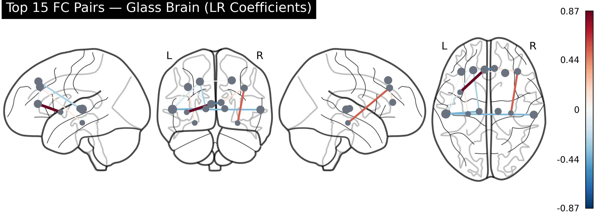

Machine learning pipeline for schizophrenia and Parkinson's disease detection from resting-state fMRI functional connectivity matrices. Built with nilearn, scikit-learn, XGBoost and LightGBM. Deployed as a FastAPI service in Docker. University of Western Australia thesis project.
Schizophrenia AUC 0.718 326 subjects · 2 sites FastAPI · Docker · nilearnSchizophrenia Detection
Development history. AUC progression across model versions. Key jumps: scaling to 326 subjects with REST-only data drove +0.079 AUC from the v2.2 baseline (0.614 → 0.693); the paradigm fix itself contributed +0.023 (v5-mixed → v5-REST). Ensemble combination added a further +0.025.
ROC curves — model comparison. 5-fold cross-validated ROC on 326 subjects across two independent sites (COBRE + ds000030). The ensemble (LR + SVM + LGBM) reaches AUC 0.718. Multi-site confounding makes this harder than single-site benchmarks.
Feature importance — top 15 FC pairs. Logistic regression coefficients ranked by absolute magnitude. Colour shows network grouping. DMN and fronto-temporal connections dominate, consistent with schizophrenia literature.
Glass brain — top 15 FC pairs. Connections weighted by logistic regression coefficient magnitude. Red edges increase schizophrenia probability; blue edges protect toward healthy. The dominant red connections (insula–cingulate, thalamo-temporal) match the SHAP rankings above.

Per-site performance. COBRE (balanced, n=146) outperforms ds000030 (skewed, n=180). Site-to-site variability is the primary barrier to clinical deployment — scanner differences introduce systematic confounds despite ComBat harmonisation.
SHAP values — feature impact. Each dot is one subject. Positive SHAP → model predicts schizophrenia; negative → healthy control. Low insula–cingulate FC (blue dots, positive SHAP) drives schizophrenia predictions; high FC (pink dots) protects toward healthy. Thalamo-temporal connections show the same pattern — hypoconnectivity is the disease signal.
Functional connectivity difference (SZ − HC). Mean FC matrix difference across 116 AAL regions. Blue = higher connectivity in HC; red = higher in SZ. Fronto-temporal and thalamo-cortical circuits show the strongest alterations.
Parkinson's Disease Detection
ROC curves — fMRI, T1w, and multimodal models. V1 uses resting-state fMRI only; V2 adds T1-weighted structural features; V3 combines both. Each version tested with leave-one-out cross-validation on 55 subjects.
Model comparison — AUC, sensitivity, specificity. Multimodal fusion (V3) improves over unimodal baselines. Sensitivity (PD recall) is prioritised over specificity for a screening use-case where false negatives are more costly.
Interactive course
A guided walkthrough of the full pipeline — from fMRI preprocessing to model deployment — with inline explanations of every design decision.